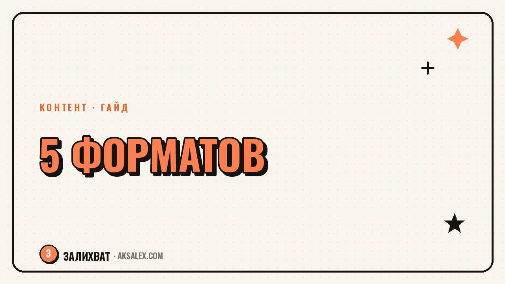

Как переупаковать один ролик в 5 форматов

Снять хороший ролик тяжело, а выжимать из него один просмотр - расточительство. Одна идея легко превращается в пять разных единиц контента: вертикальный ролик, пост с текстом, карусель, серию сторис и заметку для другой площадки. Так ты работаешь один раз, а контента получаешь на несколько дней. Разберём схему переупаковки по шагам и на конкретном примере.
Почему переупаковка выгоднее новой съёмки
Каждая идея, которую ты раскрыла в ролике, стоит времени и сил: придумать, снять, смонтировать. Если она выходит один раз и исчезает, ты теряешь большую часть вложенного. Переупаковка возвращает эти вложения: одна мысль отрабатывает в пяти местах.
Есть и второй эффект. Люди воспринимают информацию по-разному: кто-то смотрит ролики, кто-то читает посты, кто-то листает карусели. Один и тот же смысл в разных форматах ловит разную аудиторию. Ты не повторяешься - ты даёшь людям удобный им вход.
Хорошая идея заслуживает больше одного показа. Переупаковка - это уважение к собственному труду.
Пять форматов из одной идеи
Возьмём одну тему - например, три ошибки в оформлении профиля. Вот как она разворачивается в пять форматов, каждый со своим смыслом и подачей.
1. Вертикальный ролик
Основа: динамичное видео на 20-40 секунд с хуком в первой секунде. Здесь идея звучит эмоционально и коротко.
2. Текстовый пост
Та же мысль, но развёрнуто: можно добавить контекст, историю, нюансы, которые не влезли в ролик.
3. Карусель
Раскладываешь три ошибки по слайдам: заголовок, ошибка на слайд, вывод. Карусели хорошо сохраняют.
4. Серия сторис
Разбиваешь тему на 3-5 сторис с вопросами и опросами - формат для живого контакта.
5. Пост для другой площадки
Тот же смысл, переписанный под тон и длину другой соцсети: где-то короче, где-то с профессиональным уклоном.
Схема переупаковки по шагам
Чтобы это не превратилось в новую рутину, работай по одной схеме. Сначала выдели из ролика ядро - одну мысль, которую можно сформулировать в одном предложении. Дальше решай, что в каждом формате усилить: в тексте - глубину, в карусели - структуру, в сторис - диалог.
- Выпиши ядро идеи в одно предложение.
- Определи, что несёт каждый формат: эмоцию, глубину, структуру или диалог.
- Адаптируй подачу, а не копируй текст один в один.
- Разнеси публикации по дням, чтобы не выглядело повтором.
- Свяжи форматы: в сторис отсылай к ролику, в посте - к карусели.
Разнести по дням важно: если пять форматов выйдут в один час, аудитория увидит повтор. Растяни их на несколько дней - и каждая единица сработает как самостоятельная.
Что где усиливать: таблица форматов
У каждого формата своя сильная сторона. Не пытайся впихнуть в ролик глубину поста, а в сторис - структуру карусели. Играй на сильных сторонах каждого.
| Формат | Сильная сторона | Что усилить |
|---|---|---|
| Вертикальный ролик | Охват и эмоция | Хук и динамику |
| Текстовый пост | Глубина и контекст | Историю и детали |
| Карусель | Структура, сохранения | Понятные слайды и вывод |
| Сторис | Живой контакт | Вопросы и опросы |
| Пост на другой площадке | Новая аудитория | Тон и длину под площадку |
Такой подход убирает ощущение самоповтора. Зритель, который видел ролик и потом карусель, не думает, что ты повторяешься, - он получает удобный ему формат той же ценной мысли.
Как ускорить переупаковку нейросетью
Рутину адаптации можно отдать нейросети. Дай ей расшифровку ролика или его ядро и попроси переписать под нужный формат: пост, слайды карусели, тезисы сторис. За минуту получаешь черновики, которые останется поправить под свой голос.
Промпт может быть таким: возьми эту идею, сделай из неё пост на 800 знаков, шесть слайдов карусели и четыре сторис с вопросами, сохрани разговорный тон. Дальше ты только редактируешь, а не пишешь с нуля - и переупаковка занимает не часы, а минуты.
Частые вопросы
Не будет ли аудитория ругаться на повтор?
Нет, если разнести форматы по дням и адаптировать подачу. Люди воспринимают контент по-разному, и один и тот же смысл в ролике и карусели читается как два разных материала.
С какого формата начинать переупаковку?
С того, который ты уже сняла или написала. Чаще всего это ролик или пост. Вытащи из него ядро идеи и разверни в остальные форматы вокруг него.
Обязательно ли делать все пять форматов?
Нет. Начни с двух-трёх, которые тебе даются легко. Даже переупаковка ролика в карусель и сторис уже заметно увеличивает охват одной идеи.
Можно ли переупаковывать старый контент?
Да, и это отличная идея. Старый удачный ролик легко превратить в свежую карусель или пост - новая аудитория его ещё не видела, а тебе не нужно снимать заново.
Как не потратить на переупаковку больше времени, чем на съёмку?
Работай по одной схеме и отдавай адаптацию текстов нейросети. Твоя задача - выделить ядро и отредактировать черновики, а не писать каждый формат с нуля.
Раз тема оказалась полезной, вот что почитать следующим. Разбираем структуру сторителлинга для Reels и приёмы, которые реально удерживают внимание до конца ролика.
Читать статью →а не вручную